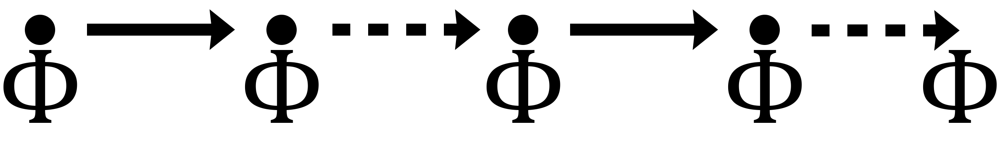
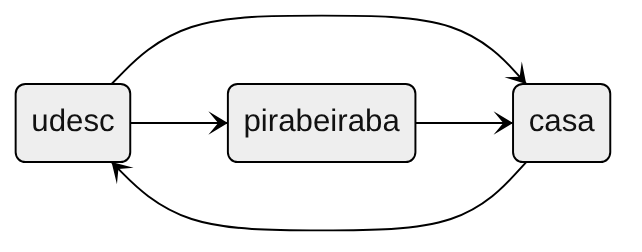

Checando propriedades com Lógica Temporal II
SlidesTable of Contents
1. Revisão & Cheatsheet
1.1. \(\square\) ou G: Globally, sempre
G \(\phi\): \(\phi\) deve ser verdadeiro por toda a execução a partir de agora.
G \(\phi\) é verdadeiro num momento \(t\) se…
…\(\phi\) é verdadeiro em todos os momentos \(t' \geq t\).
Exemplo: Comida sacia a fome.

1.2. \(\Diamond\) ou F: Finally, eventualmente, no Futuro
F \(\phi\): eventualmente (na execução a partir de agora), \(\phi\) deve ser verdadeiro.
F \(\phi\) é verdadeiro num momento \(t\) se…
…\(\phi\) é verdadeiro em algum o momento \(t' \geq t\).
Exemplo: Eventualmente, terei fome.

1.3. \(\bigcirc\) ou X: Ne(x)t, próximo
X \(\phi\): \(\phi\) deve ser verdadeiro no próximo estado.
X \(\phi\) é verdadeiro num momento \(t\) se…
…\(\phi\) é verdadeiro no momento \(t + 1\).
Exemplo: Logo após comer, tenho sede.

1.4. U: Until, até
\(\psi\) U \(\phi\): \(\psi\) deve ser verdade até que \(\phi\) seja verdade, sendo que \(\phi\) deve ser verdade no presente ou no futuro.
\(\psi\) U \(\phi\) é verdadeiro num momento \(t\) se…
…\(\phi\) é verdadeiro em algum momento \(t' \geq t\) e, para todo tempo \(t''\) (tal que \(t \leq t'' < t'\)), \(\psi\) é verdadeiro.
Exemplo: Eu tenho fome até eu comer alguma coisa.

1.5. R: Release, libera
\(\psi\) R \(\phi\): \(\phi\) deve ser verdade até e incluindo o momento que \(\psi\) se torna verdadeiro. Se \(\psi\) nunca ficar verdadeiro, \(\phi\) deve permanecer verdadeiro para sempre.
\(\psi\) R \(\phi\) é verdadeiro num momento \(t\) se…
…\(\phi\) é verdadeiro em todos os momentos \(t' \geq t\) até e incluindo o momento \(t''\) onde \(\psi\) também é verdadeiro. Alternativamente, pode ser que \(\psi\) nunca seja verdadeiro, e nesse caso \(\phi\) deve ser verdadeiro para todo momento \(t' \geq t\).
Exemplo: Ao comer chocolate, deixo de ter vontade de comer doce.

2. Exemplos
2.1. Ônibus
Normalmente, Joãozinho pega ônibus pra udesc e de volta pra casa. Às vezes, Joãozinho erra o ônibus e vai parar em Pirabeiraba.

F casa: true
2.2. Ar condicionado da sala de aula
aula_acontecendo -> sem_aula V ar_ligado: trueaula_acontecendo -> ar_ligado U sem_aula: false, porque podemos ficar em aula pra sempre :)
3. Exercício prático
3.1. Exercício prático
Vamos escrever um avaliador de operadores para operadores temporais
- Isso não é um model checker, porque não vamos considerar todas as possíveis execuções de um sistema
- Dado uma única execução e uma fórmula temporal, a fórmula é verdadeira para essa execução?
4. Tipos de propriedades
4.1. Propriedades
Propriedades podem ser propriedades de segurança (safety properties), vivacidade (liveness properties) ou uma combinação das duas.
4.2. Segurança
“Algo ruim não acontece”
Descreve algo específico. Basta esse algo acontecer uma única vez para que a propriedade seja violada.
Exemplos:
- “O saque não deve ser autorizado, a menos que uma senha correta tenha sido digitada”
- “Dois processos não devem estar na seção crítica ao mesmo tempo”
- “Ao receber um saque, eu fico com mais dinheiro do que eu tinha antes”
4.3. Segurança - Invariantes
- Definição
Invariantes são um tipo de propriedade de segurança.
Uma invariante é uma propriedade sobre um estado, não sobre uma execução. Uma invariante não consegue “ver além” de um único estado.
Uma execução satisfaz uma invariante sse cada estado da execução satisfaz a invariante.
Uma estrutura de Kripke satisfaz uma invariante sse cada estado alcançável satisfaz a invariante.
- Representação

4.4. Vivacidade
“Algo bom eventualmente acontece”
Exemplos:
- “Se um processo pediu pra entrar na seção crítica, ele eventualmente deve conseguir”
- “Cada sinaleiro deve sempre eventualmente ficar verde”
4.5. Vivacidade - propriedade de persistência
“Eventualmente, algo é satisfeito pra sempre”
\(\Diamond\square F\)
Exemplos:
- Ao entrar na faculdade, eventualmente vou ter um diploma
- Eventualmente estaremos mortos
- Eventualmente teremos cabelos brancos ou calvice
4.6. Fariness (razoabilidade)
Propriedades de razoabilidade (Fairness properties)
Razoabilidade incondicional (Unconditional fairness): “Algo acontece com frequência infinita”
- Razoabilidade forte (Strong fairness): “Algo acontece com frequência infinita se é habilitado com frequência infinita”
- Razoabilidade fraca (Weak fairness): “Algo acontece com frequência infinita se é continuamente habilitado a partir de um certo momento”
- Razoabilidade forte (Strong fairness): “Algo acontece com frequência infinita se é habilitado com frequência infinita”
Vamos ver isso com mais precisão na Lógica Temporal das Ações (TLA).
Usamos essas propriedades como pré-condições para descartar execuções não realistas.
- \(WF(...) \rightarrow F\)
- \(SF(...) \rightarrow F\)